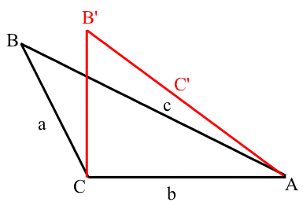
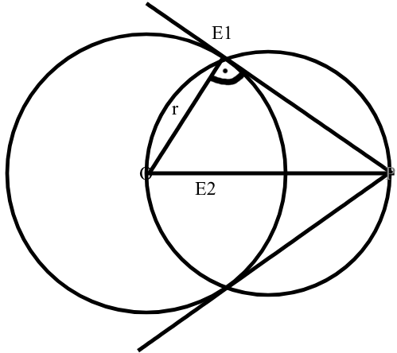

Def: A sík két oldalpontjával egyenlő távolságra lévő pontok halmaza a két pont által meghatározott szakasz felezőmerőlegesek pontjai. Tétel: A ▲ oldalfelezőmerőlegesei egy pontban metszik egymást. Ez a pont a ▲ köré írható középpontja. Bizonyítás: fc: minden pontja egyenlő távolságra van A, és B csúcsoktól. fa: minden pontja egyenlő távolságra van B, és C csúcsoktól. fc ^ fa = O (fc és fa az O pontban metszik egymást.) O pont: Rajta van az fc egyenesen ➡️ egyenlő távolságra van A, és B csúcsoktól, illeszkedik fa-ra is ➡️ egyenlő távolságra van B és C csúcsoktól Következtetés: O pont a ▲ mindhárom csúcsától egyenlő távolságra van. ➡️ A harmadik oldal felezőmerőlegese is átmegy az O ponton. A ▲ köré írható kör középpontja az O pont. Sugara: r=OA=OB=OC
Def: A sík két metsző egyenesétől egyenlő távolságra lévő pontok az egyenes által meghatározott szög felező egyenesén vannak. Tétel: A ▲ belső szögfelezői egy pontban metszik egymást. Ez a pont ▲-be írható kör középpontja. Bizonyítás: A α szögfelezője (f), ennek minden pontja egyenlő távolságra van a ▲ b, és c oldalától. A β szögfelezője (g), ennek minden pontja egyenlő távolságra van a ▲ a, és c oldalától. ^ g = K K pont illeszkedik f egyenesre ➡️ egyenlő távolságra van b, és c oldaltól. K pont illeszkedik g egyenesre ➡️ egyenlő távolságra van a, és c oldaltól. Következtetés: K pont egyenlő távolságra van a ▲ mindhárom oldalától. ➡️ γ szögfelezője is átmegy a K ponton.
Egy ▲ csak akkor, és akkor derékszögű, ha a befogók hosszának négyzetösszege egyenlő az átfogó hosszának négyzetével. T=(a+b)² 1. T=(a+b)²=a²+b²+4*a*b/2 2. ➡️ α+β=90°=180° /-90° α+β=90° ⬇️ c oldalú négyszögünk NÉGYZET T₃= c² T=(a+b)²=a²+b²+4*a a*b/2 a²+b²+4*a*b/2=c²+4*a*b/2 a²+b²=c²
Ha egy ▲-ben teljesül, hogy a két oldal hosszának négyzetösszege egyenlő a harmadik oldal hosszának négyzetével, akkor a ▲ derékszögű.  Bizonyítás: Az a oldalt forgassuk el úgy, hogy a c csúcsnál derékszög legyen. ⬇️ A B' C' ▲ derékszögű ⬇️ teljesül a Pitagorasz tétel a²+b²=c' c²=(c',)² Az ABC ▲-ben igaz: a²+b²=c² Az ABC ▲ derékszögű
Ha egy kör átmérőjének két végpontját összekötjük a körvonal bármely más pontjával, akkor derékszögű▲ kapunk. Bizonyítás: Bizonyítanunk kell, hogy ABC▲ derékszögű α+β+γ=180° γ=180°-(α+β) Kössük össze c pontot a kör középpontjával r=OC AOC▲ egyenlőszárú (AO=OC=r)
A derékszögű ▲ átfogójának felezőpontja ▲ a köré írható kör középpontja
Bizonyítás:
Be kell bizonyítanunk hogy az átfogó felezőpontja egyenlő távolságra van a ▲ csúcsától. BF=FA Tükrözzük a ▲ F-re AC'BC négyszög paralelogramma (A=c')=90o Téglalap Átlói felezik egymást F egyenlő távolságra van mindhárom csúcstól. Körköz külső pontból húzott érintő. Vázlat: r=4cm OP=8cm  A kör érintője merőleges az érintési ponton húzott sugárra Szerkesztés menete: (1.)Összekötjük az O és E pontokat (2.)OP szakasz Thaleszkörének megszerkesztése: (a) felezőpontja F (b) OF=OP=r F középponti r sugarú kör (P2) (3.) kk1h 1k=E1,E2 A két kör metszéspontja lesz a két érintkezési pont. (4.)Összekötjük P-t az érintési pontokkal.
n oldaló sokszögnek: n(n-3)/2 átlója van
Bizonyítás:
1 csúcsból n-3 átló húzható
n csúcsból n(n-3) átló húzható
de mindnek megszámoltuk kezdő, és végpontját
n(n-3)/2
n oldalú sokszögnek (n-2)180o a belső szögeinek összege Bizonyítás: Az n oldalú sokszög egy csúcsából n-3 átló húzható Ezek n-2 ▲-re bontják a sokszöget (n-2)180o a sokszög belső szögeinek összege
Last updated: 2023.10.11